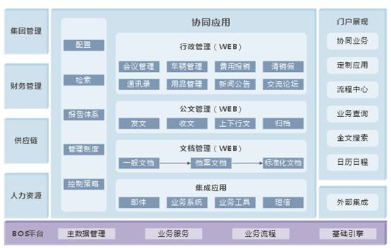

协同管理方案总体框架
协同是指人与人之间的沟通和协作。如果要给“协同”下一个正式的定义，是协调两个或者两个以上的不同资源或者个体，一起完成某一目标的过程或能力。金蝶EAS协同管理解决方案，就是指以“消息为中心，流程为驱动，以应用为核心”的一个业务综合与应用管理系统，是一个集成了协同工具软件、协同平台软件、协同办公软件以及协同商务理念的具有ERP II思想的综合应用管理系统。

协同管理是整个信息化建设的应用门户和操作平台，一方面整合、发布系统资源；一方面包装和整理业务信息；另一方面扩展业务操作和日常工作。
金蝶的EAS协同管理产品包括管理门户、协同应用等内容。其中协同应用是协同管理的核心系统功能，主要包括行政管理、公文管理、文档管理和集成应用。
选择金蝶EAS协同管理解决方案，将帮助您和您的企业实现：
- 通过信息检索、报告体系设置、管理制度等协同及控制策略的灵活配置，为企业用户提供灵活的业务流程和个性化应用门户，有效降低企业IT系统管理者的配置复杂度，提升系统协同应用效率；
- 提供会议管理、车辆管理、费用报销、请销假、通讯录、用品管理、新闻公告、交流论坛等行政管理功能，帮助集团企业实现网络一体化的集成办公和协同应用；
- 提供全面的发文、收文、上下行文、归档等公文处理流程和版本化的文档管理，帮助集团企业有效规范公文管理流程和文档管理标准；
- 支持与邮件系统、业务系统、业务工具、短信平台等系统的集成应用，为集团企业提供整合集成、高效协同的信息化办公环境。
企业内部角色应用场景
在协同管理中，金蝶通过协同应用和管理门户，为企业中的各种角色提供日常办公和业务处理的信息化应用门户。根据金蝶EAS协同管理解决方案中规划的人员应用功能和操作规程，主要分为高层领导、中层领导、一般员工三个层面，每个层面关心办公流程和信息内容都各有特色。
高层领导
****核心流程
个人效率：管理日程和合理安排时间。
工作协调：对中层管理人员工作情况及时了解，指导工作方便有效。
任务管理：可以方便下达任务，检查和审核有效保障任务完成。
项目协作：有效参与各大业务流程，资源分配合理有序。
流程****：审批重要流程事项，对流程的效率进行统计分析，监督运作。
掌控信息
数据分析：自动化的分析、统计、制表、画图功能；快速高效的分析数据，提供最佳的辅助决策支持功能。
管理控制：随时随地查询公司数据，****流程运作。
实时在线：无论是在办公室、旅途中抑或家中，都可以通过Internet来访问网络，建立通信渠道。
快捷沟通：****或PDA都可以随时与同事沟通，了解流程状况、公司运作。
中层领导
流程审批
个人效率：管理日程和合理安排时间。
工作协调：对团队成员工作情况及时了解，指导工作方便有效。
任务管理：可以方便下达任务，检查和审核有效保障任务完成。
项目协作：有效参与各大业务流程，组织流程实施，提供流程管理。
流程运作：发起或审批重要流程事项，提供流程知识。
信息审核和查看
部门管理：得心应手的部门效率管理系统。部门核心目标多重保障。
实时在线：无论是在办公室、旅途中抑或家中，都可以通过Internet来访问网络，建立通信渠道。
快捷沟通：****或PDA都可以随时与同事沟通，了解流程状况、公司运作。
员工
流程提交和****
个人效率：管理日程和合理安排时间。
待办事项：员工的待办工作，每天都有具体、明确的目标，随时提醒。
岗位职责：清楚岗位职责，要做什么，要负责什么，要学习什么，怎么发展。
流程协作：了解上级对审批的进度，流程可以通知需要办理的事务。
信息收集和编辑
实时在线：无论是在办公室、旅途中抑或家中，都可以通过Internet来访问网络，建立通信渠道。
快捷沟通：****或PDA都可以随时与同事沟通，了解流程状况、公司运作。
自我管理：个人计划就是部门计划的一部分，时刻感受到自己在团队中的重要性。
应用组合
根据企业的应用范围，金蝶EAS针对不同的应用，为大家配置了不同的功能模块组合。对于集团型企业来说，分为个人办公、行政办公、团队协作、知识管理等四类用途，另外，针对企业对于ERP系统和信息化系统的数据整合的要求，也可以选择管理门户，来统一管理所有信息系统的流程、信息和数据展现方式。
个人办公：
提供多种类型的个人办公方式，让你随时随地办理手头的重要任务和日常工作，帮助您及时进行个人与个人和个人与组织之间的交流和协作；
行政办公：
实现企业组织内和组织间快速行政事务处理和办公资源共享，为管理者提供多种审批方式和操作模式；
团队协作：
为管理团队建立统一的可分解或整合的任务目标、组织形式，记录关键事件，进行团队范围内的文档共享；
知识管理：
为企业建立知识积累和企业文化传承的管理平台，更科学和规范的搭建知识管理的应用系统和管理体系；
管理门户：
提供灵活便捷的Web框架，集成统一的流程中心、及时办公的移动应用、准确地商业分析系统，能够随需扩展和配置，方便企业建立既统一又个性化的门户应用系统。